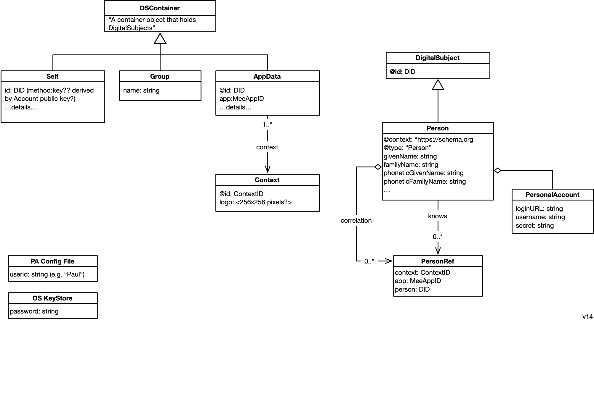

Welcome
 Edit this page
Edit this pageEnd-user perspective
A privacy agent is a minimalist, occasional use app that acts as the user's personal digital twin. It manages their digital self and its expression in different contexts. It preserves the user's privacy when they are interacting with Mee-compatible apps and websites that have licensed the user's data according to the terms of the Mee Human Information License.
Although a privacy agent is an interactive application, it operates mostly in the background, sharing and managing human information about the user with Mee-compatible apps according to the user's information sharing preferences and under the terms of the Human Information License. This shared information can be used for many purposes. These include: simplifying sign-in/sign-up, to providing contact information, payment methods, as well as sharing preferences, interests, etc. that apps can use to provide personalization, recommendations, and tailored offers.
Self and contexts
The agent represents both the user's selfness and whonesses (see Concepts for more about these concepts)
The selfness of the user is held in a data container called the Self. The contents of the Self are holistic and therefore quite sensitive. For this reason they would normally not be shared in a direct or comprehensive form with others. This self abstraction is at the heart of what enables the Mee architecture to be a "meta-identity system," as opposed to an identity system. The user's self is the point of integration across contexts each of which may be from differing identity systems.
Each context is represented by a context data container. A directed correlation link points from an entity in the self to the entities representing the user in each context. For privacy reasons only the user should know that each of these separate contexts contain representations of the same individual. Each context may define its own identifier namespace, schemas, state management, communications protocols, UI, UX, etc.
We can illustrate all of these concepts with a simple example. A user might have a gmail address, a Twitter handle, and in a game they play have the handle DevilSpawn666. Here's a simplified view of how this is represented:
Functionality
The following table provides an overview of the functionality of an agent:

End-user functionality provided by built-in apps:
- VC Wallet: import, store, view, and present Verifiable Credentials (VCs)
- Login: login with Connect-with-Mee or OpenID SIOP
End-user functionality:
-
Edit data in self-asserted contexts
-
Chat: Person-to-person and agent-to-person messaging
-
View data in contexts
-
Share (bi-directionally) data in an app contxt with the app
-
Request access to a context managed by others
-
Grant access to a (local or remote) data context managed by the user
-
Sync contexts across user's devices
-
Backup local contexts
-
Restore: recover all data using SRP and backups
-
Store data in local contexts
- Data is stored according to shared or app-specific schema. In some contexts this local data is authoritative whereas in other cases it is a copy of externally managed context data.
-
Recognize user (e.g. using facial recognition, etc.)
-
Secret Recovery Phrase: Create and store (in fragments)
- During installation the user is asked create a Secret Recovery Phrase (SRP) that is never shared. This SRP is used as a source of entropy for the generation of cryptographic keys and thus acts as a root for a person's identity. Their data is encrypted using keys generated from the SRP. For disaster recovery purposes the user is encouraged to divide the SRP into encrypted fragments according to Shamir's How to share a secret. The agent presents the user with a choice of options for where to store these fragments including with friends (for "social recovery"), in files and optionally in a Shared Secret Service hosted by a service provider the user trusts.
Architecture
The Mee multi-layer architecture is shown below:

Application layer
The application layer consists of Mee-compatible apps. The diagram shows four sample apps that Alice might interact with. These include, a local app, an app that is a facade for Bob's agent, a news site app (NYTimes), and a medical lab app. Note: each person's agent appears to other users' agents as an app called the agent facade.
Agent layer
The agent layer consists of a privacy agent app with a UI that gives the user (Alice or Bob) control over the management of their data. The agent's UI allows Alice to inspect and in some cases edit each of the partial representations of her in each context.
Request & Authorization layer
The request and authorization layer handles requests for access to data from Alice's agent as well as from local apps, remote apps, and other user's privacy agents. Alice's authorization server grants or revokes access by these requests to data in the context data storage layer.
Data Access & Replication layer
The data access and replication layer provides data access (as controlled by tha authorization layer above) to the data in each of Alice's contexts. It manages the replication of changes to the data in one of Alice's contexts both (i) between the corresponding app and Alice's agent as well as (ii) among Alice's edge devices (phone, tablet, laptop, etc.).
Context Data Storage layer
The context data storage layer holds a set of contextualized representation of the user as defined by an app. For the four sample apps we're discussing here, three corresponding context data stores stored on Alice's device--the Med Lab app's context data store is not replicated on Alice's local device (perhaps as a hypothetical example because the medical data set is too large for Alice's device)
Classes

Sample Data
In the sample data shown below, a user, Alice, has two groups. The first group represents her role as a Journalist. It contains two contexts: the context of her relationship with Gmail and with Twitter. She plays a game for which there is a context (without being within a Group). The second group, entitled "News" contains only one context, her relationship with the New York Times news site.

framework.json <-- extremely out of date; needs updating (5+months old)
Data Types

-
ContextID - The digital space/realm/domain within which the user is interacting.
-
MeeID - Identifier of any kind of Digital Subject (i.e. entity) about which data is stored in the agent.
-
MeeAppID - A specific kind of MeeID. Uniquely identifies an app developer's app. A single, logical, MeeAppID is associated with one or more physical apps (usually on different platforms such as mobile, webapp, etc.) all of which that creates and manages the data contents of an AppData using the same schema. [We have to think through concurrent update issues in the case of N>1 physical apps]
-
Secret Recovery Phrase - a 12-word textual phrase that the user creates. It is used to generate cryptographic keys that in turn are used to encrypt the user’s personal data whether it is stored locally on their device or in a backup location. It can be used to generate keys to digitally sign transactions (e.g., for crypto currency transactions). It should never be shared with anyone or any service provider. If the user loses this phrase, they lose the ability to decrypt their data.
Keys
- Account key pair is the primary user account key pair.
- PBKDF2 key is a key generated by using user password. It’s needed to encrypt the user account private key.
- User device key pair is a key pair is generated and stored on the user device. Device private key can be used to encrypt the user account private key.
- Client key pair is key pair to identify client app or website
- Context key is a key to encrypt user data in the context.
Roadmap

Nov-15 (iOS only)
- Mee SDK
- Login with Connect-with-Mee (mobile app/browser only)
- Store very simple context data (userid only!) in a context
- Recognize the user using faceID
v1 - TBD, 2022
- Login with Connect-with-Mee (mobile app/browser or desktop browser)
- Backup local contexts
- Restore
- SRP
v2 - TBD, 2022:
- iOS and Android support
v3 - Feb, 2023
- Support social/other SRP sharding and recovery
v4 - April 2023
- Verifiable Credential wallet
- Integrated P2P text messaging
- Replicate user's data across the their devices
- Review some kinds of context data
- Request access to another person's data
- Authorize access to your data by another
- Manage backup/restore of user's data
v5 - October 2023
- MacOS and Windows support
- Integrated & standalone password manager
Privacy
| AS A/AN | I WANT TO… | SO THAT… |
|---|---|---|
| user | my personal identity/data management app (the Mee app) is not dependent on any external administrative authority | I have self-sovereignty |
| user | have un-correlated interactions with others over unbounded time and space | I have strong privacy |
| user | have as much of my data as possible be user-held | I can easily and directly disclose it to whomever I wish |
| user | have as much of the data as possible that I share with apps be used only "while using the app" | my data footprint is minimized |
| user | share my data to others (people and apps) | I can interact with them |
| user | be able to trust the recipients of my disclosures | I feel comfortable disclosing information to them |
| user | be able to trust that what I disclose to others (people and apps) will not be disclosed by them to 3rd parties beyond the minimal amount necessary to implement the interaction/transaction with me | my data doesn't spread further than necessary to other actors and increase my vulnerability to exploitation |
| user | be able to know how the recipient of my disclosure will handle my personal data | I feel comfortable disclosing information to them |
Privacy and the HIL
| AS A/AN | I WANT TO… | SO THAT… |
|---|---|---|
| user | know that apps adhere to the maximum provisions of (ADPPA, CCPA, GDPR) | I have a minimum, baseline level of privacy as dictated by the best enacted and proposed privacy laws |
| user | know that by signing the HIL apps are held to a standard higher than the best of proposed and enacted laws | my privacy is maximized |
| user | require apps to request explicit permission to transfer data to Data Processor as well as to write an audit log of all such transfers | my privacy is maximized. I can have transparency to these transfers and evidence for recourse if the HIL terms are violated |
| user | prohibit the sale of my human information | I cannot be exploited and my privacy is maximized |
| user | be able to erase all context data stored by the app (and that no backups exist). Note: inferred | my privacy is maximized |
| user | prevent apps from creating backup copies of my human information | my privacy is maximized |
VC Wallet
| AS A/AN | I WANT TO… | SO THAT… |
|---|---|---|
| user | import, view, store and present VCs | I can prove things about myself to apps and others |
Login
| AS A/AN | I WANT TO… | SO THAT… |
|---|---|---|
| user | be able to signing/signup to new apps without passwords | I have a easier and friendlier UX without the hassle of remembering and reseting passwords |
| user | login with Connect-with-Mee to mobile app or mobile Safari | I can access apps/sites on the same mobile device as my agent |
| user | login with SIOP | I can access SIOP-compatible sites on my desktop browser [whether or not they are Mee-certified] |
| user | know if the app/site is Mee-certified | trust that the protections of the HIL are in place |
Edit
| AS A/AN | I WANT TO… | SO THAT… |
|---|---|---|
| user | be able to edit self-asserted information (e.g. email address) in a context | the app has my updated information |
Chat
| AS A/AN | I WANT TO… | SO THAT… |
|---|---|---|
| user | receive messages from my agent | I can respond to requests for information, suggestions, etc. from the agent |
View
| AS A/AN | I WANT TO… | SO THAT… |
|---|---|---|
| user | be able to view all my personal information in a context | I understand what's being shared about me so that I can make sure it is correct |
Share
| AS A/AN | I WANT TO… | SO THAT… |
|---|---|---|
| user | share data with apps | they have the information they need about me |
| user | have apps share app-generated data with me | so that I can leverage this data in other contexts (by other apps) |
Request
| AS A/AN | I WANT TO… | SO THAT… |
|---|---|---|
| user | be able to request access to a data context managed by another party | I can use this information on their behalf |
Grant
| AS A/AN | I WANT TO… | SO THAT… |
|---|---|---|
| user | be able to grant access to one of my data contexts to another party | they can use this information on my behalf |
Sync
| AS A/AN | I WANT TO… | SO THAT… |
|---|---|---|
| user | have my data replicated/synced on all my devices | I can decide at any time which device to use and have a consistent user experience across all of them |
Backup
| AS A/AN | I WANT TO… | SO THAT… |
|---|---|---|
| user | be able to create backups of my data | it can be restored in case of a catastrophic disaster wherein I lose all of my devices (and I loose access to my device backups) |
Restore
| AS A/AN | I WANT TO… | SO THAT… |
|---|---|---|
| user | be able to restore my Mee app data from backups in the case of a catastrophic disaster wherein I lose all of my devices (and I loose access to my device backups) | I don't lose all of the personal data that I've already collected and lose the investment I've made in assembling it |
Store
| AS A/AN | I WANT TO… | SO THAT… |
|---|---|---|
| user | keep my personal information in a convenient and secure app | I can easily share it with apps (and other people) |
Recognize
| AS A/AN | I WANT TO… | SO THAT… |
|---|---|---|
| user | be able to authenticate myself to the agent (e.g. using facial recognition on a phone) | so that it recognizes me (and only me) and thus my agent cannot be accessed by others |
Secret Recovery Phrase
| AS A/AN | I WANT TO… | SO THAT… |
|---|---|---|
| user | be able to create a secret phrase | I can recover all my information |
Form factor
| AS A/AN | I WANT TO… | SO THAT… |
|---|---|---|
| user | install the Mee app | I can enjoy the benefits of the app |
| user | run the Mee app on mobile and desktop devices | I can access it from any of my devices |
Note: the above this advice: https://www.mountaingoatsoftware.com/blog/advantages-of-the-as-a-user-i-want-user-story-template
Concepts
Selfness vs. Whoness
In his last public speech Kim Cameron introduced two useful definitions based on archaic English:
- Selfness: The sameness of a person or thing at all times or in all circumstances. The condition of being a single individual. The fact that a person or thing is itself and not something else. Individuality, personality.
- Whoness: Who or what a person or thing is. A distinct impression of a single person or thing presented to or perceived by others. A set of characteristics or a description that distinguishes a person or thing from others.
The following diagram illustrates these concepts and introduces the notion of context:

Personal data
- User-exclusive Data article - introduction to exclusive-to-the-user data
- Categories of personal data - four main categories of user data (user input, app sensed, app generated and app inferred) and how examples of these categories are managed in different ways (user-exclusive, user-shared, user-replicated, app-shared, app-replicated or app-shared)
- Location/sharing alternatives:

.